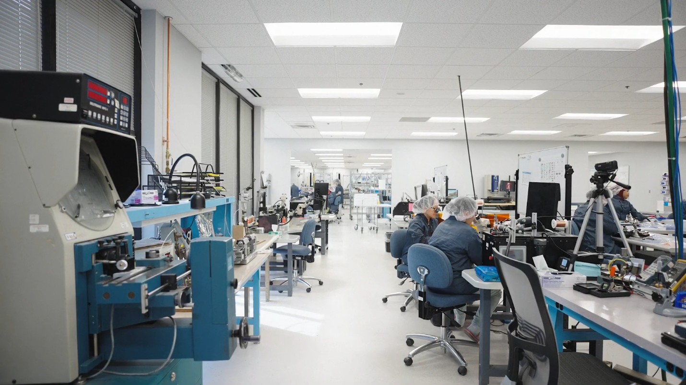
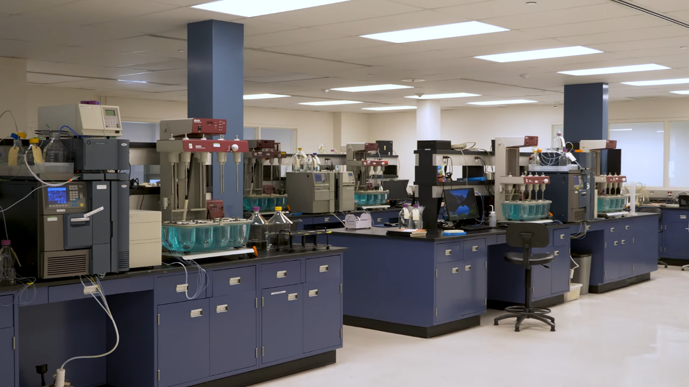
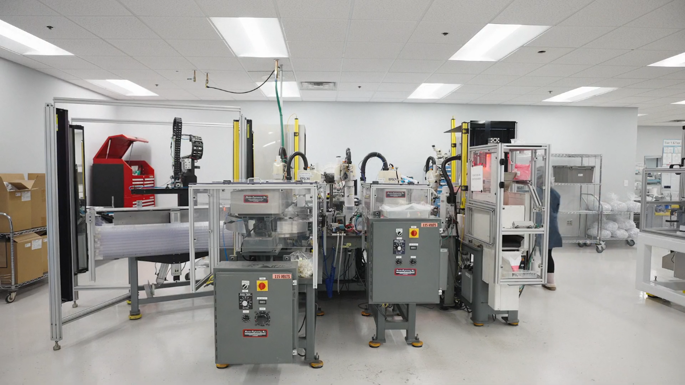
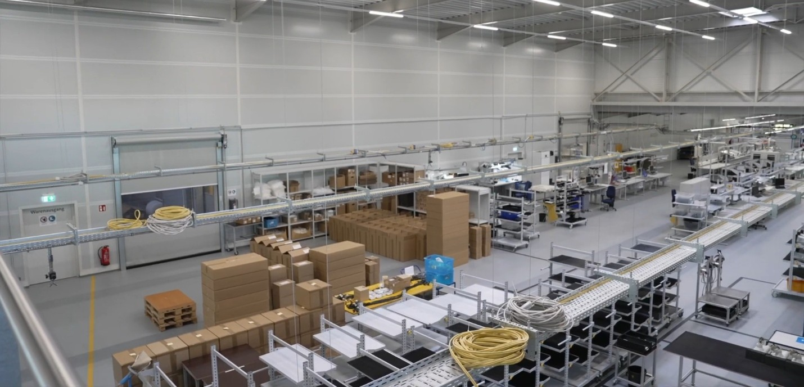
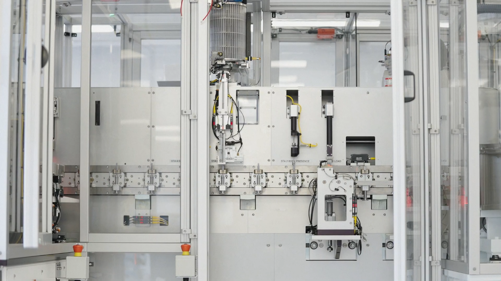
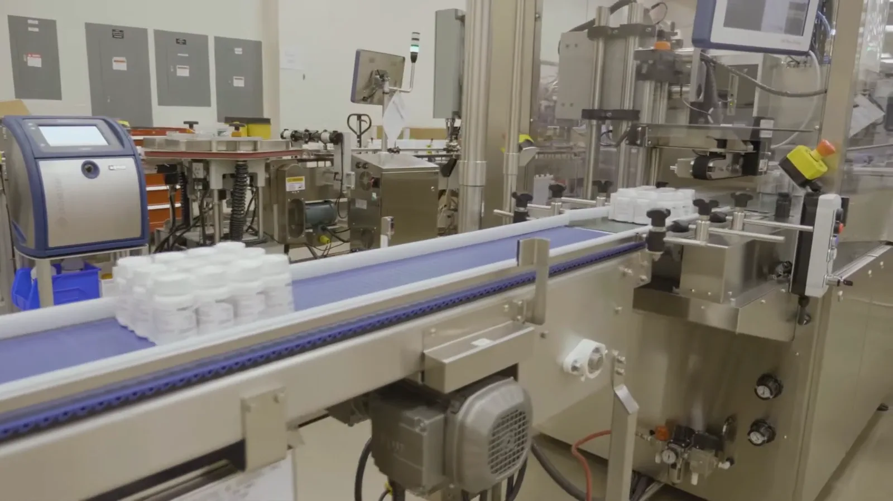
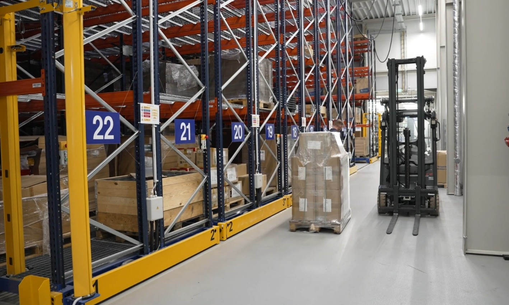

WE ARE THE LEGAL
MANUFACTURER OF
OUR PRODUCT LINE
Green Med Ltd. is the UK-based legal manufacturer of record for its own product line. The design, technical files, brand rights and quality standards rest centrally with us. Production takes place across a governed multi-site network, but the Centre that defines the identity and the standard of every product is Green Med Ltd. The sites are manufacturing locations — not the manufacturer.
We design, document, inspect and release our products under a certified ISO 13485 quality management system, and carry the regulatory responsibility — registrations and the Declaration of Conformity. Wherever a product is made, final batch release is centralised at Green Med Ltd.
THE MANUFACTURING FACILITY
Green Med Ltd. is a UK legal manufacturer operating its own facility. Here we design, manufacture, quality-control and give final batch release to our product line in-house, under a single certified ISO 13485 quality management system.
FACILITY AT A GLANCE
QUALITY & REGULATORY
INSIDE THE FACILITY


WHAT WE MANUFACTURE
Our own product line spans four categories — all designed, specified and released under the Green Med standard.
In-vitro diagnostic reagents and test kits developed and manufactured to our specifications.
Medical devices and medical equipment placed on the market under Green Med as the legal manufacturer.
Non-medical laboratory equipment engineered and built to defined performance and safety criteria.
Laboratory consumables and chemicals produced under the same controlled quality framework.
Manufactured vs. integrated OEM and third-party products are integrated or distributed — not manufactured by Green Med, and sit outside our manufacturing scope.

ONE CENTRE,
A GOVERNED NETWORK
Green Med operates a centrally governed hub-and-network model. The Centre in the UK holds design authority and the quality system; manufacturing hubs and authorised subcontractors produce strictly to Green Med's specifications and under its control. Wherever a product is physically made, Green Med Ltd. remains the legal manufacturer.
United Kingdom
- Holds design authority, technical documentation and brand rights
- Owns the ISO 13485 quality management system
- Carries regulatory responsibility — registrations & Declaration of Conformity
- Performs in-house manufacturing and quality control
- Provides network oversight and site qualification
- Holds exclusive final batch-release authority across the network
Switzerland
- Perform final manufacture — including higher-class products — to Green Med specifications
- Operate strictly under Green Med's control and quality framework
- Qualified and audited sites (announced & unannounced)
- Submit batches to the Centre for final release
Subcontractors
- Qualified production of components and lower-class items
- Feed the manufacturing hubs within the governed framework
- Work to Green Med specifications and acceptance criteria
- Presented by country and role only
Sites are shown by country and role. Regardless of manufacturing location, Green Med Ltd. is the legal manufacturer of record; final batch release is held exclusively by the Centre.

HOW THE CENTRE KEEPS ONE STANDARD
Every site operates inside the same control framework. These are the mechanisms the Centre uses to hold one standard across the whole network.

All products are designed and specified by the Centre; sites build to controlled technical documentation, never their own.
Every manufacturing hub and subcontractor is qualified against defined criteria before it may produce.
A Quality Agreement with each site defines responsibilities, controls and reporting obligations.
Green Med personnel and on-site oversight keep production continuously aligned with the standard.
Critical tooling is Green Med-owned where applicable, keeping process control with the Centre.
Defined test protocols and quality gates govern what may pass each stage of production.
Regular and unannounced audits verify continued conformity at every site in the network.
Multiple qualified sources protect supply continuity without compromising the standard.
THE PRODUCTION PROCESS

Every product begins as a Green Med design. Our engineering and R&D define the specification, materials and performance criteria — the intellectual property that makes us the legal manufacturer.
Each device is documented under our ISO 13485 quality management system — technical file, risk management, verification and validation records — before any production is authorised.
Raw materials and components are procured from qualified suppliers and inspected against defined acceptance criteria on arrival, so production starts from a controlled baseline.
Manufacturing runs at Green Med's own facility, its manufacturing hubs (Türkiye ×2, Switzerland) and authorised subcontractors — always to the specification, controls and quality criteria set by the Centre. Producing close to demand shortens lead times and simplifies logistics.
In-process and final quality control verify that each batch meets the Green Med standard. For equipment this includes installation, operational and performance qualification (IQ/OQ/PQ), instrument calibration and — where relevant — cold-chain validation. Nothing moves forward until it conforms.
Products are packaged and labelled with the Green Med identity — including the legal manufacturer, batch and reference information — and prepared for release.
Regardless of where a batch is manufactured, final batch release is authorised exclusively by Green Med Ltd. (the Centre) and products are placed on the market under our Declaration of Conformity. Manufacturing hubs submit batches for release — they never release independently.

CERTIFICATIONS, STANDARDS & CONFORMITY
As the legal manufacturer of its own product line, Green Med Ltd. designs, documents and releases its products under a certified quality management system — and places them on regulated markets under the appropriate framework for each region and product risk class.
Green Med Ltd. operates a certified ISO 13485:2016 quality management system covering the design and manufacture of its product line — the basis for CE marking under the EU MDR and IVDR.
A certified ISO 9001:2015 quality management system underpins Green Med's business and operational processes alongside its medical-device QMS.
Products are placed on the market under Green Med Ltd. as the legal manufacturer, supported by UKCA and CE Declarations of Conformity.
Green Med Ltd. is registered with the UK Medicines & Healthcare products Regulatory Agency (MHRA) as a medical device manufacturer.
UKCA marking under the UK MDR 2002, supported by MHRA registration.
EU MDR (2017/745) and IVDR (2017/746), placed via an EU Authorised Representative with CE marking.
ÜTS (Product Tracking System) registration for the Turkish market.
Conformity assessment is routed by product risk class. Higher-class medical devices and IVDs are assessed by a UK Approved Body / EU Notified Body; lower-risk products are self-declared under Green Med's Declaration of Conformity.
Green Med Ltd. is the legal manufacturer of record for its own product line. Regulatory documentation, including our ISO 13485 certificate and UKCA/CE Declaration of Conformity, is available on request.